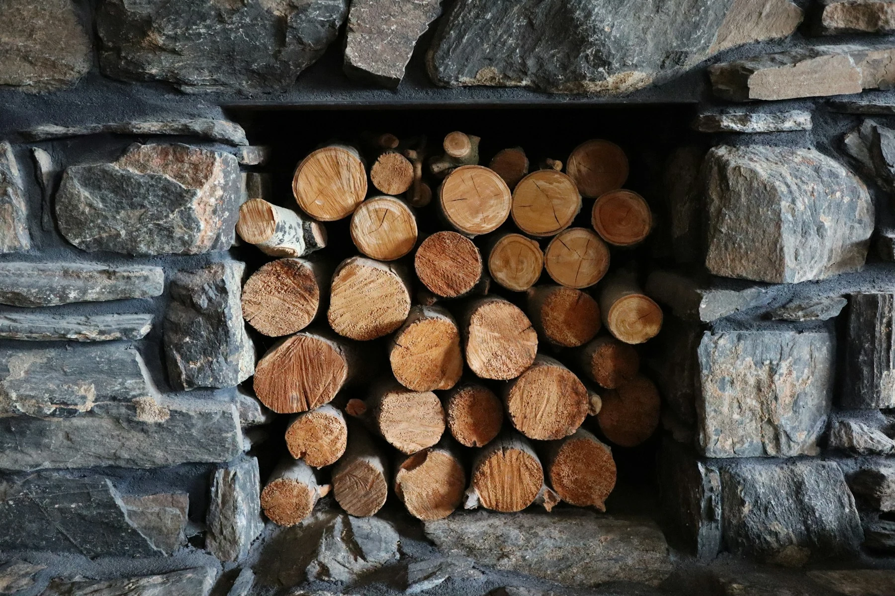

OUR STORY
A local business.
A personal touch.
Family-run firewood supply, with roots in forestry and a practical approach to keeping homes warm.
Supplying firewood
since 2009.
Altrincham Logs began selling firewood from a farm log yard in 2009. The existing business describes a father-and-son team, with Adam working alongside his father.
That background shapes the way we work: practical advice, a choice of fuels and delivery details agreed with each customer.
We supply nets and bulk bags of kiln dried logs, along with kindling, firelighters, solid fuels and log storage. If you're unsure what to choose, get in touch and tell us about your fireplace, storage and access.
Have a conversation with us ↗
Small details. A better service.
Helpful advice
Talk to us about fuel choice, storage and the best order size for your space.
Clear arrangements
We'll confirm availability, pricing and delivery before your order is agreed.
Local service
A family business serving Altrincham and surrounding communities.